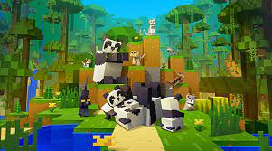
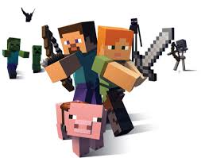

Welcome To FrendzWasTaken Website
In this website I will be explaining about minecraft and give two links to download minecraft for free as it needs to be purchased.
So what is basically minecraft?
Minecraft was created by Mojang in 2009 and is the brainchild of Markus “Notch” Persson. It is heavily inspired by games such as Dwarf Fortress, Dungeon Keeper, and Infiniminer, but takes the free-form, sandbox gameplay seen in those titles to new heights. It was the company’s first official game and has gone on to become the best-selling game of all time, with over 180 million copies sold to date.
How to play minecraft?
.jpg)
Getting started with Minecraft is super easy. First, you need to purchase and install the game. After installation is complete, simply start the game by running the launcher you downloaded from the Minecraft homepage, which also gives you the option to play from your browser. Now it’s time to log in, navigate the main menu, and select singleplayer. The launcher opens the News screen, which displays game updates and links. Enter your username and password in the lower right corner and click Log In to continue to the main menu. This list describes what you can do after you click the buttons on the main menu:
.jpg)
- SinglePlayer: Start or continue a basic game. The remaining portion of this article covers the options for starting a game in SinglePlayer mode.
- MultiPlayer: Join other players online.
- Languages: Change the language of the text in Minecraft. Use the tiny button, just left of the Options button, showing a speech bubble containing a globe.
- Options: Manage game options such as sound, graphics, mouse controls, difficulty levels, and general settings.
- Quit Game: Close the window, unless you’re in In-Browser mode.
.jpg)
To start your first game in SinglePlayer mode, follow these steps:
Click the SinglePlayer button to view a list of all worlds.- If you’re just starting out in Minecraft, this list should be empty.
- Click the Create New World button to start a new game.
- The Create New World page appears.
- In the World Name text box, type whatever name you want and click the Create New World button at the bottom of the screen.
To turn on cheats, click the More World Options button, and then click the Allow Cheats button to turn cheats on or off. Turning on game cheats increases or decreases the level of difficulty as you play and switches between Creative mode and Adventure mode. Cheats give you more control over the world when you’re just getting started. When you finish creating your world, the game automatically starts by generating the world and placing your avatar (character) in it. But I reccommened to not turn on cheats if you want to play real survival.
- Survival — after randomly being spawned in a new world, players have to try to survive by gathering material, building shelter, gaining experience, and fighting off hostile mobs.
- Creative — a game mode where players have immediate access to almost all blocks and items, are invulnerable and immune to death, and have the ability to fly. The purpose of this game mode is to create/design unique worlds.
- Adventure — players interact with objects (levers, buttons) and mobs to complete an adventure. But one thing they can't do is break blocks.
- Spectator — invisible to everything and cannot interact with blocks, entities, or your inventory. This mode is typically used to observe other players' created worlds.
- Hardcore — similar to survival mode, Hardcore is set to the “hard” difficulty level permanently and players cannot respawn; once you die, the map is deleted (or you permanently become a spectator).
.jpg)
When selecting SinglePlayer and Survival mode in Minecraft, your first day can be very exciting but also very stressful. You are immediately thrown into a world with little resources and have to prepare yourself to ensure you survive your first night, when hostile mobs are more likely to attack you. Typically, your first day in Minecraft involves things like collecting resources, punching woods, killing animals, building or finding shelter, gathering food, etc.
.jpg)